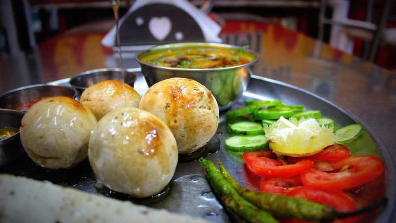

 Dal bafla is basically a baked dish. A little similar to the popular dal baati, this dish is made with wheat, curd and of course, spices. Before baking it in the oven, these round balls are immersed in water and boiled.
The end result is a perfectly well-balanced dish that’ll melt in your mouth!
Cost For Two: Rs 150 (approx.)
One can find Dal-Bafla in Indore at Hotel Rajhans in Sarafa,
Shri nakoda Dham bhojnalay, opp. kanch mandir,Prithivlok Hotel,Apna Sweets and Annapurna Sweets.